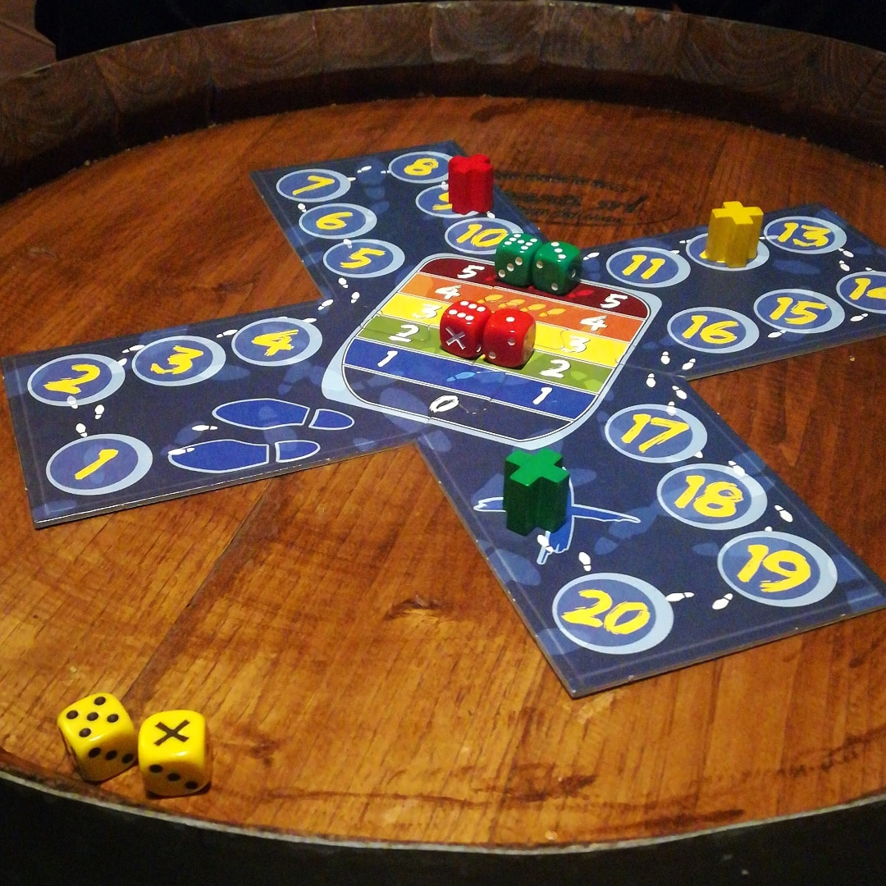

EXCAPE

20/30 minuti 3-6 8+
Al proprio turno, ciascun giocatore tira i suoi due dadi e non li somma, ma legge il risultato
come nei dadi percentuali, cioè se, per esempio, ottengo 3 e 4, vale come 34 o 43
(di solito conviene scegliere il numero più alto e vedremo perché). Se esce la X vale come zero,
ma attenzione, io posso ritirare i miei dadi quante volte voglio, ma se dal secondo tiro in poi esce almeno una X,
il mio turno finisce ed ho perso il tiro (e devo arretrare di tante caselle quante X ho ottenuto).
Il tiro di dado non fa muovere la pedina, a meno che non si ottenga un doppio 1, 2, o 3 che fa muovere di 1, 2 o 3
caselle (poi se voglio posso tenermi il tiro, o ritirare).
Quando ho ottenuto coi dadi un numero soddisfacente, lo piazzo su uno dei 6 gradini al centro della X e,
in teoria, al mio prossimo turno, prima di tirare, mi muoverò di un numero di caselle pari al numero del
gradino su cui ho messo i dadi.
Così se, per esempio, ho scelto di metterli sul gradino 3, al mio prossimo turno mi muoverò di tre caselle.
Ma, e qui sta il bello, se un altro giocatore dopo di me tira ed ottiene coi dadi un numero maggiore o
uguale al mio e lo piazza in un qualsiasi gradino più basso del mio, rimuove tutti i dadi sopra di lui
che mostrino punteggi uguali o inferiori. Per questo conviene ottenere numeri alti coi dadi e bisogna
pensare attentamente a dove piazzare i dadi, perché magari può convenire un gradino basso pur di far
perdere il turno agli altri.
Ovviamente vince chi, per primo, raggiunge o supera la casella finale.
RECENSIONE
Excape è adatto per gli amanti dei giochi di strategia e di calcolo, ma con una buona dose di fortuna. Secondo noi questo gioco è più dinamico e divertente se si partecipa in poche persone, mentre con il massimo dei giocatori il gioco tende a farsi lungo e lento.